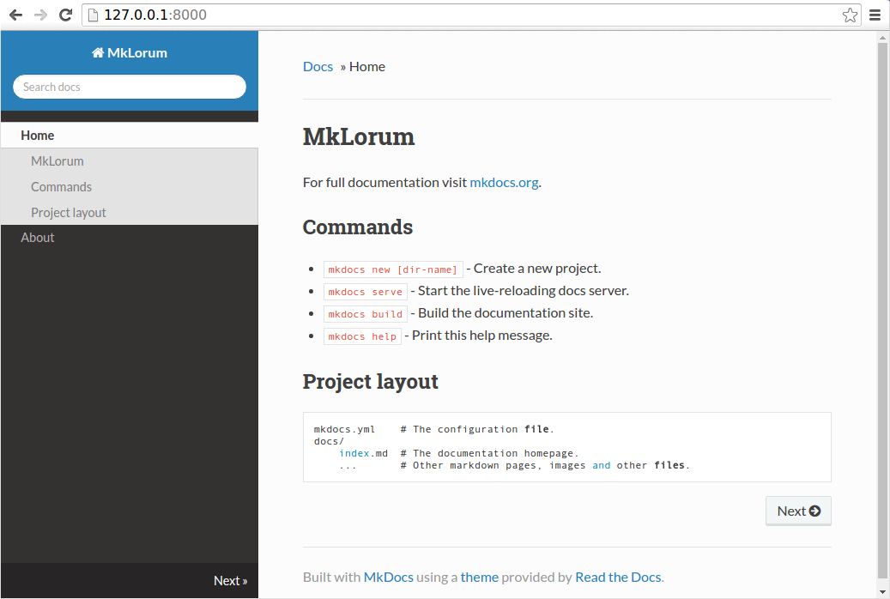

MkDocs中文文档¶
使用Markdown来构建项目文档
概述¶
MkDocs是一个**快速**、简单、**华丽**的静态网站生成器，适用于构建项目文档。文档源文件以Markdown编写，并使用一个YAML文件来进行配置。
在任何地方部署¶
MkDocs生成完全静态的HTML网站，你可以将其部署到GitHub pages、Amzzon S3或你自己选择的其它任意地方。
很棒的主题¶
MkDocs有一堆很好看的主题。 官方内置了两个主题：mkdocs和readthedocs，也可以从MkDocs wiki中选择第三方主题，或者自定义主题。
实时预览你的网站¶
当你写作时，内置的开发服务可以帮助你预览显示效果。当文档有改动时，甚至还可以自动载入并刷新你的浏览器。
易于定制¶
通过自定义主题，让你的项目文档以你希望的方式呈现。
安装¶
使用包管理器安装¶
如果你拥有并使用包管理器（例如apt-get，dnf，homebrew，yum，chocolatey等）来在你的系统上安装软件包，那么你可以尝试搜索“MkDocs”软件包，如果有最新版本，则可以使用包管理器来安装（有关详细信息，请查看相应系统的说明文档）。 就这样安装就完成了！ 跳到入门。
如果你的包管理器中没有最新的“MkDocs”软件包，你仍然可以使用软件包管理器来安装“Python”和“pip”。 然后使用pip来安装MkDocs。
手动安装¶
为了手动安装MkDocs，你需要在系统上安装Python，以及Python包管理器pip。你可以使用以下命令来检查是否已经安装了这些软件：
$ python --version
Python 2.7.14
$ pip --version
pip 18.1 from /usr/local/lib/python2.7/site-packages/pip (python 2.7)
MkDocs支持Python2.7.9+、3.4、3.5、3.6、3.7和pypy。
安装Python¶
可以通过从python.org下载适用于你系统的安装程序并运行它来安装Python。
Note
如果你在Windows上安装Python，请确保选中此框以在安装程序提供此选项时将Python添加到PATH（默认情况下通常是关闭）。

安装pip¶
如果你使用的是最新版本的Python，则默认情况下很可能已经安装了Python包管理器pip。但是，你可能需要将pip升级到最新版本：
pip install --upgrade pip
如果你是第一次安装pip，下载get-pip.py。然后运行以下命令进行安装：
python get-pip.py
安装MkDocs¶
使用pip安装mkdocs包：
pip install mkdocs
你现在应该能运行安装于系统上的mkdocs命令了。 运行mkdocs --version来检查一切是否正常。
$ mkdocs --version
mkdocs, version 0.15.3
Note
如果你希望为MkDocs安装联机帮助页，click-man工具可以为你生成并安装它们。 只需运行以下两个命令：
pip install click-man
click-man --target path/to/man/pages mkdocs
请参阅click-man文档，了解为什么pip不会自动生成和安装联机帮助页。
Note
如果你使用的是Windows，则上述某些命令可能无法实现开箱即用。
一个快速的解决方案可能是在每个Python命令前加上python -m，如下所示：
python -m pip install mkdocs
python -m mkdocs
对于更永久的解决方案，你可能需要编辑PATH环境变量以包含Python安装的Scripts目录。 最近的Python版本包含一个为你执行此操作的脚本。 切换到Python安装目录（例如C:\Python34 \），打开Tools，然后打开Scripts文件夹，双击运行win_add2path.py文件。 或者，你可以下载脚本并运行它（python win_add2path.py）。
入门¶
入门非常简单。
mkdocs new my-project
cd my-project
花一点时间来回顾一下为你创建的初始项目。

有一个名为mkdocs.yml的配置文件，以及一个名为docs的文件夹，它将包含你的文档源文件。现在docs文件夹只包含一个名为index.md的文档页面。
MkDocs附带一个内置的开发服务器，可以让你在处理文档时预览文档。 确保与mkdocs.yml配置文件位于同一目录中，然后通过运行mkdocs serve命令启动服务器：
$ mkdocs serve
INFO - Building documentation...
INFO - Cleaning site directory
[I 160402 15:50:43 server:271] Serving on http://127.0.0.1:8000
[I 160402 15:50:43 handlers:58] Start watching changes
[I 160402 15:50:43 handlers:60] Start detecting changes
在浏览器中打开http://127.0.0.1:8000/，你将看到显示的默认主页：

开发服务器还支持自动重新加载，并且只要配置文件、文档目录或主题目录中的任何内容发生更改，都将重新生成文档。
使用你的文本编辑器打开docs/index.md文档，将初始标题更改为“MkLorum”，然后保存更改。浏览器将自动重新加载，你将立即看到更新过的文档。
现在尝试编辑配置文件：mkdocs.yml。 将site_name设置更改为“MkLorum”并保存文件。
site_name: MkLorum
你的浏览器应立即重新加载，你将看到新设置的站点名称已经生效。

添加页面¶
现在在文档中添加第二个页面：
curl 'https://jaspervdj.be/lorem-markdownum/markdown.txt' > docs/about.md
由于我们的文档站点将包含一些导航，你可以编辑配置文件，并通过添加nav设置来管理每个页面导航的顺序、标题和嵌套情况：
site_name: MkLorum
nav:
- Home: index.md
- About: about.md
保存更改，你将看到左侧有“Home”和“About”导航栏，同时右侧还有“Search”，“Previous”和“Next”。

尝试菜单项并在页面之间来回导航。 然后单击Search。 将出现一个搜索对话框，允许你搜索任何页面上的任何文本。 请注意，搜索结果包括网站上每次出现的搜索字词，并直接链接到搜索字词所在页面的部分。你无需付出任何努力或配置即可获得所有这些！

主题化我们的文档¶
现在，更改配置文件以通过更改主题来更改文档的显示方式。 编辑mkdocs.yml文件并添加theme设置：
site_name: MkLorum
nav:
- Home: index.md
- About: about.md
theme: readthedocs
保存更改，你将看到改为使用了ReadTheDocs主题。

更改Favicon图标¶
默认情况下，MkDocs使用MkDocs favicon图标。 要使用不同的图标，请在docs_dir中创建一个img子目录，并将自定义的favicon.ico文件复制到该目录。 MkDocs将自动检测并使用该文件作为你的favicon图标。
生成网站¶
那看起来不错。 你已准备好部署MkLorum文档。 首先生成文档：
mkdocs build
这将创建一个名为site的新目录。 看一下该目录的情况：
$ ls site
about fonts index.html license search.html
css img js mkdocs sitemap.xml
请注意，你的源文档已输出为两个名为index.html和about/index.html的HTML文件。同时各种其他媒体文件也已被复制到site目录中作为文档主题的一部分。另外还有一个sitemap.xml文件和mkdocs/search_index.json。
如果你正在使用版本控制软件，例如git，你可能不希望将生成的文件包含到存储库中。只需要在.gitignore文件中添加一行site/即可。
echo "site/" >> .gitignore
如果你正在使用其他版本控制工具，请你自行查阅相关文档，了解如何忽略特定目录。
一段时间后，文件可能会从文档中删除，但它们仍将驻留在site目录中。 要删除那些陈旧的文件，只需在运行mkdocs命令时带上--clean参数即可。
mkdocs build --clean
其他命令和选项¶
还有其他各种命令和选项。有关命令的完整列表，请使用--help标志：
mkdocs --help
要查看给定命令上可用的选项列表，请使用带有该命令的--help标志。 例如，要获取build命令可用的所有选项的列表，请运行以下命令：
mkdocs build --help
部署¶
你刚刚生成的文档站点仅使用静态文件，因此你几乎可以在任何地方托管它。 GitHub project pages和Amazon S3是个很不错的托管地方，具体取决于你的需求。 将整个site目录的内容上传到你托管网站的地方，然后就完成了。 有关常见主机的具体说明，请参阅部署文档页面。
获取帮助¶
要获取关于MkDocs的帮助，请使用discussion group、GitHub issues或者freenode上的MkDocs IRC频道-#mkdocs。